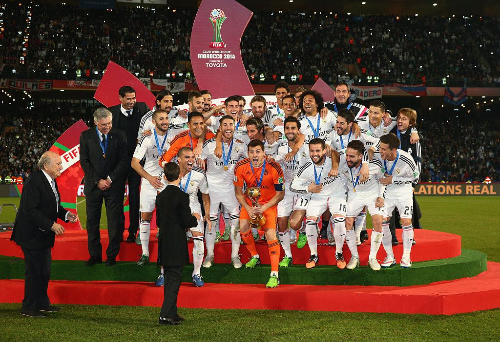
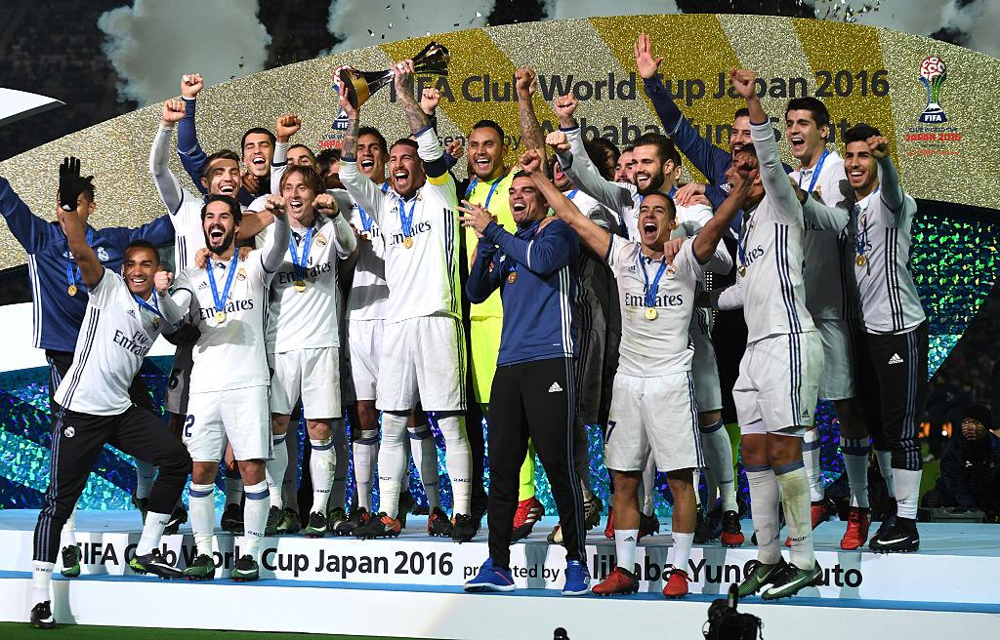
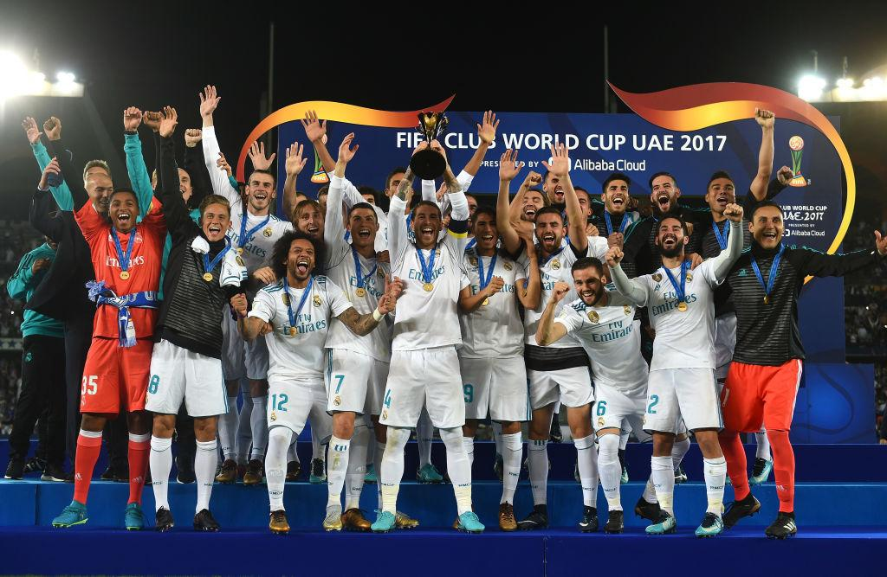
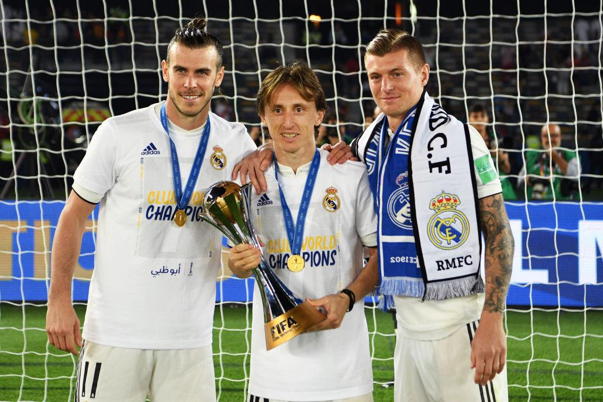
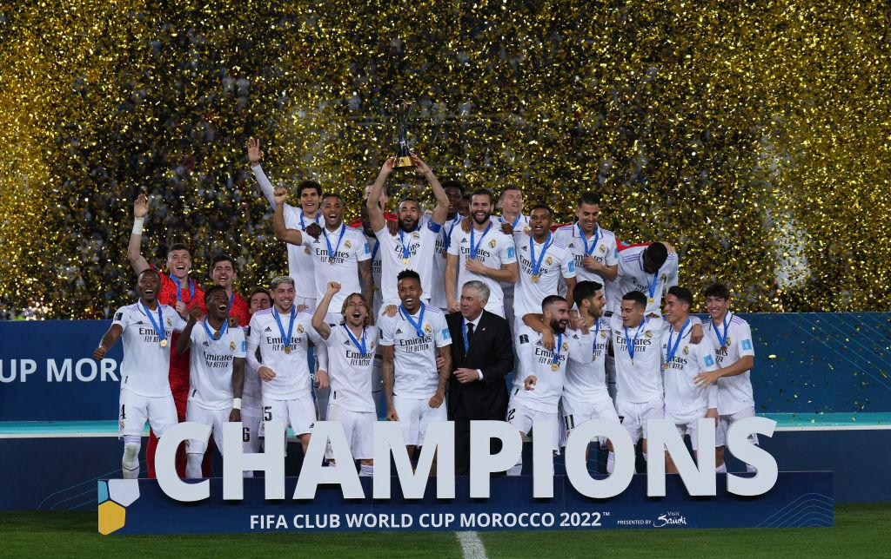

Real Madrid have won the FIFA Club World Cup 5 times, making them the most successful club in the competition's history.

Final: Real Madrid 2–0 San Lorenzo de Almagro
After winning the 2014 UEFA Champions League ("La Décima"), Real Madrid traveled to Morocco as favorites. Goals from Sergio Ramos and Gareth Bale secured the club's first FIFA Club World Cup.
Key Moment: Ramos opened the scoring with a powerful header before Bale sealed the victory.

Final: Real Madrid 4–2 Kashima Antlers (After Extra Time)
The Japanese champions shocked Madrid by taking the match to extra time. However, Cristiano Ronaldo produced a masterclass.
Key Moment: Cristiano Ronaldo scored a hat-trick to win the final and secure Madrid's second Club World Cup.

Final: Real Madrid 1–0 Grêmio FBPA
Real Madrid became the first club to successfully defend the FIFA Club World Cup.
Key Moment: Ronaldo scored a superb free-kick in the second half to decide the final.

Final: Real Madrid 4–1 Al Ain FC
Despite Ronaldo's departure earlier in the year, Madrid dominated the hosts in Abu Dhabi.
Key Moment: Goals from Luka Modrić, Marcos Llorente and Sergio Ramos helped Real Madrid win a third consecutive Club World Cup, a record achievement.

Final: Real Madrid 5–3 Al Hilal SFC
One of the highest-scoring finals in Club World Cup history. Real Madrid's attacking quality proved too much for Al Hilal.
Key Moment: Vinícius Júnior scored twice, while Karim Benzema and Federico Valverde also found the net.